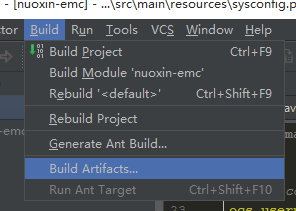

转载请注明来源：http://shicaiD.github.io
主要讲述将SpringBoot项目打包成war包并部署的简单操作。
这里我的环境是
步骤1：修改pom.xml
首先将<packaging>jar</packaging> 中的jar改为war，即：<packaging>war</packaging>
其次，添加以下依赖
1 2 3 4 5 6 7 8 9 10 11 12 13 14 15 16 17 18 19 20 21 22 23 24 25 26 27 28 29 30
| <dependency> <groupId>org.springframework.boot</groupId> <artifactId>spring-boot-legacy</artifactId> <version>1.0.2.RELEASE</version> </dependency> <dependency> <groupId>javax.servlet</groupId> <artifactId>javax.servlet-api</artifactId> <version>3.0.1</version> </dependency> <dependency> <groupId>commons-fileupload</groupId> <artifactId>commons-fileupload</artifactId> <version>1.3.1</version> </dependency> <dependency> <groupId>org.springframework</groupId> <artifactId>spring-test</artifactId> <version>4.1.4.RELEASE</version> </dependency> <dependency> <groupId>org.springframework.boot</groupId> <artifactId>spring-boot-starter-tomcat</artifactId> <scope>provided</scope> </dependency>
|
修改pom文件后若要运行项目，请将<scope>provided</scope> 这一句注释掉。
步骤2：修改启动文件
找到你SpringBoot的启动类
1 2 3 4 5 6 7 8 9 10 11 12 13 14 15 16 17 18 19 20
| * Spring Boot启动主类 * * @author jzsong@uworks.cc */ @SpringBootApplication @EnableScheduling @EnableSwagger2 public class Launch{ * 应用程序入口 */ public static void main(String[] args) { SpringApplication app = new SpringApplication(Launch.class); app.addListeners(new SystemInit()); app.run(args); } }
|
做一定修改：
1 2 3 4 5 6 7 8 9 10 11 12 13 14 15 16 17 18 19 20 21 22 23 24 25 26
| * Spring Boot启动主类 * * @author jzsong@uworks.cc */ @SpringBootApplication @EnableScheduling @EnableSwagger2 public class Launch extends SpringBootServletInitializer { @Override protected SpringApplicationBuilder configure(SpringApplicationBuilder builder) { return builder.sources(Launch.class); } * 应用程序入口 */ public static void main(String[] args) { SpringApplication app = new SpringApplication(Launch.class); app.addListeners(new SystemInit()); app.run(args); } }
|
步骤3：打包

然后在项目的target文件夹里就能找到打包的war包了。
步骤4：部署
首先，将war文件拷贝到tomcat目录\webapps\ 下。
其次，若有jar包的话(pom文件的不需要再次导入)，将必要的jar文件拷贝到tomcat目录\lib\ 下。
最后，重启tomcat，在浏览器输入：http://地址:端口/war包名/ 即可访问。